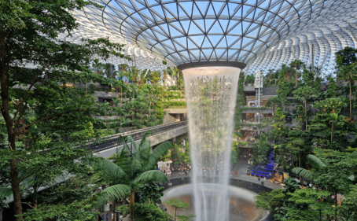
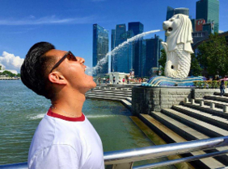
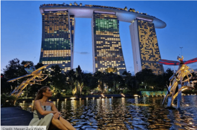

Quick summary
A short 1.5-day photography-focused plan with directions and links to Google Maps. PDF itinerary is available for download.
Day 1 — 4 Dec (Evening)
7:00 PM — Jewel Changi Airport (Rain Vortex & dinner)Open map
8:15 PM — Travel to Marina Bay → Merlion ParkOpen map
9:00 PM — Gardens by the Bay — Dragonfly Lake (Supertree light show)Open map
Jewel → Merlion → Gardens by the Bay
Day 2 — 5 Dec (Full Day)
Start early to fit all photo spots — LAVO at sunset for skyline shots.
 ArtScience Museum
ArtScience MuseumDay 3 — 6 Dec (Departure)
8:15 PM — Travel to Marina Bay → Merlion ParkOpen map
2:30 PM: Arrive at airport for baggage & security (flight 5 PM)
Practical notes
- Raffles Lighthouse is not included (restricted access).
- For The Hive (NTU) expect a 30–40 minute transit from central Marina Bay — taxi recommended.
- LAVO reservations recommended for sunset window (6:45–7:30 PM).